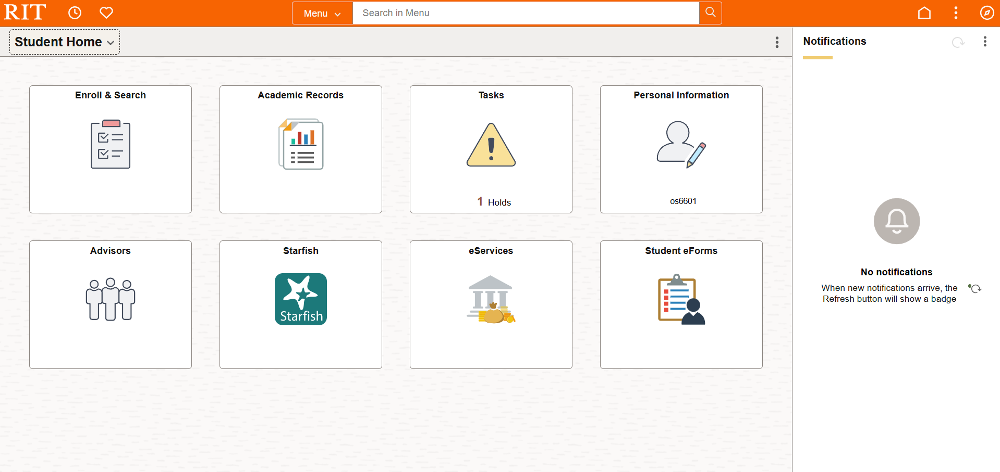
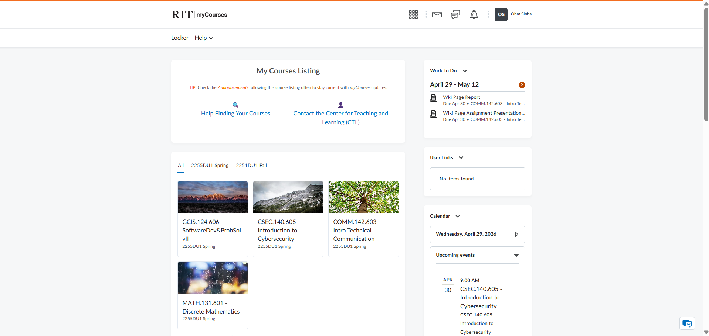

Introduction
RIT students use two online systems almost every semester: SIS (Student Information System) and myCourses. Learning how to use these tools early will save you time, reduce stress, and help you avoid missing important deadlines.
This guide explains what each system does, walks you through the most common tasks step by step, and highlights the mistakes students make most often. If English is not your first language, don't worry — we use plain, simple language throughout.
💡 Why does this matter?
Missing an enrollment deadline or dropping a class by accident can delay your graduation. Knowing these systems well is one of the easiest ways to stay on track.
Who This Page Is For
This guide is designed for:
- New first-year students who have never used SIS or myCourses
- International students who may be unfamiliar with U.S. university systems
- Transfer students entering RIT from another college
- Any RIT student who wants a quick, clear reference
It covers all majors and class years. Whether you are studying Engineering, Business, Art, or Computing, you will use SIS and myCourses.
What Is SIS?
SIS stands for Student Information System. It is RIT's official online portal where you manage your academic records and enrollment. Think of it as your "business office" for school tasks.
What you can do in SIS
- Enroll in classes — search for courses and add them to your schedule
- Swap sections — change from one section of a course to another without losing your spot
- Apply for graduation — submit your graduation application when you are ready
- Update your address — keep your mailing and local address current
- View your unofficial transcript — see all the courses and grades on your record
- Change grading basis — switch between letter grade and pass/fail (when allowed)
🔗 Access SIS
Log in at TODO: Insert official SIS URL — verify with RIT using your RIT computer account credentials.

Caption: The SIS home screen. The left menu shows the tasks described in this guide.
What Is myCourses?
myCourses is RIT's learning management system (LMS). It is the website where your professors post course materials and where you submit your work. Think of it as your "online classroom."
What you will find in myCourses
- Syllabi — your course outline, policies, and grading breakdown
- Assignments — homework, projects, and submission dropboxes
- Grades — your scores on individual assignments and your running total
- Announcements — messages from your professor
- Discussion boards — online conversations for class participation
🔗 Access myCourses
Log in at TODO: Insert official myCourses URL — verify with RIT using your RIT computer account credentials.

Caption: The myCourses dashboard. Each tile represents one of your enrolled courses.
Most Important Tasks
Below are the tasks you need to know, organized by how critical they are. Start with the highest-priority items.
🔴 Highest Priority
-
Enrolling in classes High
You must enroll during your assigned enrollment window. If you miss it, popular classes may fill up. -
Swapping sections High
If you need a different time or instructor, use the Swap feature in SIS (not Drop + Add — see Swap vs. Drop below). -
Graduation application High
You must apply for graduation through SIS by the posted deadline — it is not automatic.
🟡 Medium Priority
-
Updating your address Medium
Keep your local and permanent address up to date so RIT can reach you. -
Changing grading basis Medium
Some courses allow you to switch between a letter grade (A, B, C…) and pass/fail. Check with your advisor first.
🟢 Lower Priority
-
Viewing your unofficial transcript Lower
Useful for checking your grades or sending a quick record to an employer. Available anytime in SIS.
Swap vs. Drop
Students often confuse Swap and Drop. The difference is important because choosing the wrong one can cost you your seat in a class.
| Feature | Swap | Drop |
|---|---|---|
| What it does | Switches you from one section to another in a single step | Removes you from a class entirely |
| Risk of losing your seat | Low — you keep the old section if the new one is full | High — once dropped, you must re-enroll and the seat may be taken |
| When to use it | You want a different time, day, or instructor for the same course | You no longer want to take the course at all |
| How to do it | SIS → Enrollment → Swap | SIS → Enrollment → Drop |
⚠️ Common Mistake
Do not drop a class and then try to add the other section. If the new section is full, you will have lost your original seat. Always use Swap when you only want to change sections.
Key Terms / Glossary
These are terms you will see in SIS and myCourses. Definitions are written in plain English.
- Waitlist — A waiting line for a class that is full. If a seat opens, the first person on the waitlist is automatically enrolled. TODO: Verify automatic enrollment behavior with RIT Registrar
- Degree Audit — A report that shows which graduation requirements you have completed and which ones you still need. Find it in SIS.
- Enrollment Window — The specific date and time when you are allowed to start enrolling in classes. Earlier class years (seniors) usually enroll first.
- Grading Basis — The system used to score your work. Common options are "Letter Grade" (A, B, C…) and "Satisfactory/Not Satisfactory" (pass/fail).
- Unofficial Transcript — A free, non-stamped copy of your academic record that you can view or print from SIS. Not accepted for official purposes (like transferring to another university).
- LMS (Learning Management System) — Software for online classrooms. At RIT, the LMS is myCourses.
- Syllabus (plural: Syllabi) — A document from your professor that lists the course schedule, assignments, grading policy, and classroom rules.
- Add/Drop Period — The first few days of the semester when you can add or drop courses without academic penalty. TODO: Verify exact dates with RIT Academic Calendar
Warnings & Deadlines
Pay close attention to these common problems and deadlines.
⚠️ Graduation Application Deadline
You must submit your graduation application in SIS by the posted deadline each semester. If you miss it, your graduation may be delayed. TODO: Verify deadline dates with RIT Registrar
⚠️ Add/Drop Deadline
After the add/drop period ends, dropping a course may result in a "W" (withdrawal) on your transcript, or you may not be able to drop at all. TODO: Verify policy details with RIT Academic Calendar
⚠️ Don't Confuse SIS and myCourses
SIS is for enrollment and records. myCourses is for classwork and grades. You cannot enroll in a class through myCourses, and you cannot submit homework through SIS.
⚠️ International Students: Address Changes
If you are an international student, keeping your address current in SIS is especially important for visa and immigration records. TODO: Verify with RIT International Student Services
Action Steps
Follow these numbered steps for the most common tasks. Each guide tells you where to click.
How to Enroll in a Class
- Log in to SIS using your RIT computer account username and password.
- Navigate to "Enrollment" in the left-hand menu (or the Student Center).
- Click "Add a Class."
- Search for the course by subject, number, or keyword.
- Select the section that fits your schedule.
- Click "Add" and then "Finish Enrolling." Confirm that the class appears on your schedule.
Caption: The "Add a Class" screen in SIS. Enter the subject and catalog number to find your course.
How to Swap a Section
- Log in to SIS.
- Go to "Enrollment" → "Swap a Class."
- Select the class you are currently in from the drop-down menu.
- Search for the new section you want instead.
- Confirm the swap. If the new section is full, you will stay in your original section — no risk.
How to Apply for Graduation
- Log in to SIS.
- Find "Graduation" or "Apply for Graduation" in the menu. TODO: Verify exact menu path
- Select your expected graduation term (e.g., Spring 2026).
- Review the information and submit.
- Check for confirmation — you should receive an email or see a status update in SIS.
✅ Tip
Run a Degree Audit before applying. This tells you if you have completed all requirements.
How to Check Grades in myCourses
- Log in to myCourses.
- Click on the course you want to check.
- Look for a "Grades" link in the course navigation bar.
- Review your scores for each assignment and your running total (if available).
Frequently Asked Questions (FAQ)
Click any question to see the answer.
SIS is for enrollment, records, and administrative tasks (enrolling in classes, graduation application, transcripts). myCourses is for learning — submitting homework, reading syllabi, and checking grades.
No. Enrollment only happens through SIS. myCourses shows the classes you are already enrolled in.
Add yourself to the waitlist in SIS if one is available. You can also contact the instructor or your academic advisor for permission or alternative sections. TODO: Verify waitlist and override process with RIT Registrar
Yes — Swap is safer. If the new section is full, SIS keeps you in your original section. Drop + Add risks losing your seat. See the Swap vs. Drop comparison above.
Your enrollment window (the date and time when you can start adding classes) is listed in SIS under your Student Center. Seniors typically enroll first, followed by juniors, sophomores, and freshmen. TODO: Verify enrollment window location in SIS
Individual assignment grades are in myCourses. Your final semester grades and GPA are on your unofficial transcript in SIS.
Sources / Update Note
This page was created as a COMM 142.603 class assignment. The information is based on the author's experience as an RIT student and the assignment instructions.
🔄 Refresh Note
RIT may update SIS or myCourses at any time. If any steps in this guide look different from what you see on screen, check the official RIT help pages or contact the TODO: Insert RIT help desk name and link.
Sources
- RIT Student Information System (SIS) — TODO: Insert official URL
- RIT myCourses — TODO: Insert official URL
- RIT Academic Calendar — TODO: Insert official URL
- RIT Registrar's Office — TODO: Insert official URL
- COMM 142.603 Assignment Instructions (course materials, not publicly available)
Author & Contact
TODO: Insert your name and RIT email
This page was last reviewed on TODO: Insert date. Content should be verified each semester.